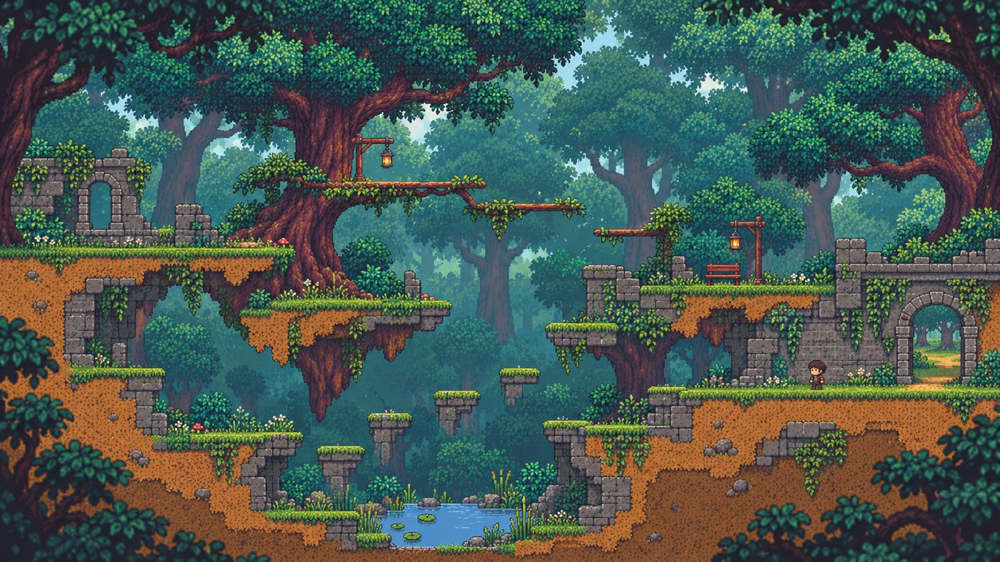
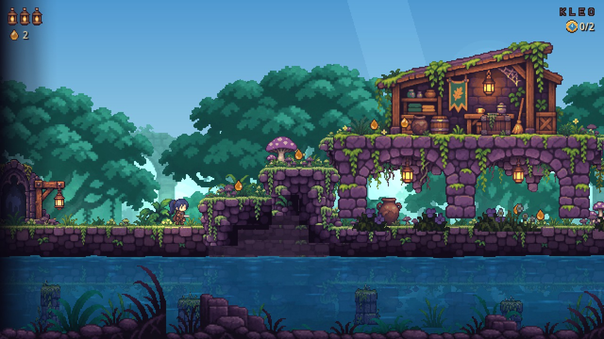

Ironbark by Day
Region 1 in daylight, after your six new mockups: orange earth banks with grey ruin stone set into them, thick green grass, great old trees, floating islands, a clear pond and a soft sky. Bright and fun, never dark. This kit replaces Book 3's dusk kit in level 1-1 and every level of the region after it.
What changes
You found the dusk art pass "super dark", with creatures and thorns lost in it. The game is now lit as bright day, but its art is still Book 3's dusk kit, which can't be lit into the look of your mockups. This book asks for the kit that can: the ground, the islands and logs, the trees, the pond, the backdrops and the foreground in the mockups' style, plus real art for the new letters K-L-E-O, the bonus token, the hidden bonus entrances and thorns you can see at a glance.


| Piece | In the game today | Status |
|---|
Red is no longer reserved for the Blight: banners and mushroom caps may be red, as in your mockups. Health stays amber lantern flames.
How to use this book
D1 and D3 are the ground everywhere, D5 the floating islands, D17 the distance behind it all: together they set the look. D12 gives the letters and the token real art. Make the rest once those read well in 1-1.
- Attach the images each card lists. They are in
docs/art-production/platformer-attach/: D1 to D6 are your mockups, G8 the game today. D1 goes with every card. - Press Copy and paste the prompt into your image model. The copy includes the shared rules unless you untick the box at the top.
- Check the result against the checklist. If it falls short, use a fix from If the image falls short.
- Save it under the card's file name and hand it to me exactly as the generator made it. Don't run it through another cleanup or export tool. I reduce it to true pixel scale and place it in 1-1, and we judge it in the game.
- Tick it done. Ticks are saved in this browser only.
How a level is assembled
The same method as before, with the mockups' daylight on top. These rules are why the cards ask for what they ask for.
Collision first, then skin
- Every level is blocked out as solid masses with flat floors: that is the collision, approved before any art.
- The ground's art is painted along the edges of those masses (D1, D2) and filled with earth inside (D3). No black inside a mass: earth all the way in.
- Pieces she stands on (islands, logs, stones, treetops) have a flat walking line at the height the card gives.
Natural, like Donkey Kong Country
- Everything she stands on is something real: ground, a stone step, a log, a root, a treetop, an island. No floating planks.
- Things people left (lantern posts, benches, crates) look used and placed by someone.
- Secrets have a visible tell: a draught into a false wall, a faint glow at a hidden entrance.
Parallax and light
- Sky 0.05 · far forest 0.15 · mid forest 0.35 · great trees just behind the play · playfield 1.0 · one leafy band in front.
- Lanterns are lights in the engine: paint the flame and the lit glass, never the halo.
- Each layer back is paler and hazier than the one in front.
Read at a glance
- What hurts must look like it hurts: thorns bristle, pale against green and brown.
- What to collect must shine: gold letters, a gold token.
Images to attach
All in docs/art-production/platformer-attach/.
The ground
The mockups' banks and terraces: orange earth, grey stone set into it, thick grass on top. Every bank, ledge and terrace in the region is made of these four.
Islands, logs and stones
Things she stands on that aren't the ground itself. Each has a flat walking line at the height its card gives.
Great trees and treetops
The great trees standing just behind the play, and the crowns of the secret route over the hill.
The pond
The clear water under the level and in its pits, and the plants at its edges.
Letters, tokens, thorns and props
The new collectibles (letters K-L-E-O, a bonus area's token), a bonus area's hidden entrance, thorns that read as danger, and the things people left in the forest.
Sky, forest and foreground
The day sky, the far and mid forest behind the play, and the one leafy band along the bottom of the view.
Check every result
Every image
- Put it next to D1. It looks like the same artist made both, in the same daylight.
- It is real pixel art: hard square pixels on one even grid, no blur, no soft gradients.
- No text, labels, grid lines or watermarks (the letters K-L-E-O excepted); transparent where the card says so.
- Bright: no black masses, no night tones.
Ground and pieces
- Every walking line is dead straight, at exactly the height the card gives.
- Widths and openings match the card's numbers: lay a ruler on them.
- Undersides break up with clods, roots and stones, never a straight edge.
Things
- The thorns read as danger at a glance, at game size.
- The letters and token shine gold against green and brown.
Backdrops
- The left and right edges join.
- Each is paler and hazier than the layer in front of it.
- Nothing in it looks like a ledge she could stand on.